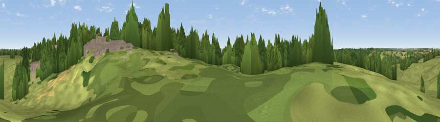

Viewpoint near Havering-Atte-Bower
#40281 in England · top 33% of its area beats it · near Havering-Atte-Bower · access?Where it is
The exact computed spot (TQ 50941 93093). Click the marker for map links.
Public access: no public right of way or access land is recorded at this exact spot — it may be on private land. Computed from Natural England's CRoW access layer and OpenStreetMap rights of way — not the legal definitive map. Always verify locally.
The view, rendered

A 360° render of this exact spot computed from the terrain model, tree cover and land cover — summer colours, afternoon light, calibrated against photographs of famous viewpoints. Real trees, hedges and buildings will differ in detail.
The panorama
Grey silhouette: terrain skyline in each direction (720 bearings, Earth curvature and refraction included). Dashed green: skyline with trees (+15 m) and buildings (+8 m) as obstacles. Blue strip: how far the ground is visible on each bearing.
Where the view opens
Wedge length = distance to the farthest visible ground on that bearing (vegetation-aware). Rings at 10, 25 and 50 km.
What fills the view
48% grassland · 21% woodland · 18% built-up · 12% cropland
Angular shares of the visible panorama (visual magnitude), not map area. Landscape diversity 0.55 (0–1 Shannon).
Key numbers
More beautiful places nearby
The staircase of upgrades: each row has a higher view potential than everything closer. Driving times are estimates from straight-line distance, calibrated against real road routing — check an actual route before setting out.
| Place | Direction | Drive | Score |
|---|---|---|---|
| Havering Atte Bower farm | E · 1 km | ~2 min | 26.0 |
| Viewpoint near Chigwell Row | W · 3 km | ~7 min | 28.0 |
| Lambourne Hill | NW · 4 km | ~9 min | 28.3 |
| Viewpoint near Great Warley | ESE · 7 km | ~15 min | 40.0 |
| Jury Hill | ESE · 12 km | ~22 min | 48.5 |
| Viewpoint near Horndon On The Hill | ESE · 18 km | ~31 min | 51.8 |
| Viewpoint near Vange | ESE · 21 km | ~36 min | 58.2 |
| Viewpoint near South Benfleet | ESE · 28 km | ~45 min | 59.8 |
51.61643, 0.17876 · source: osm viewpoint · position refined by local search. Computed location — check access rights before visiting.